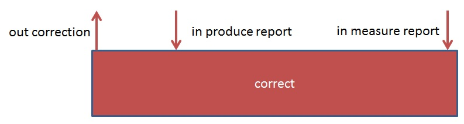
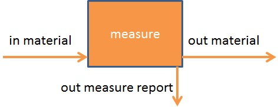
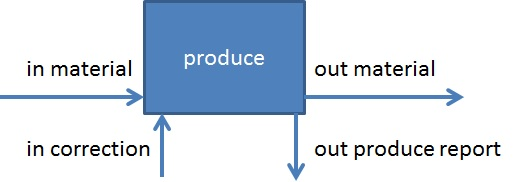
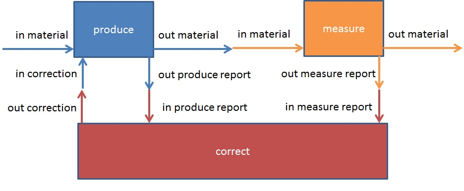

Modelling Example - Control Loop¶
In this example, we model a control loop. The control loop consists out of three processes: produce, measure, and correct. Between these processes material and reports are exchanged. The three processes repeat the following steps:
The produce process makes the material according to specification,
The measure process measures the produced material, and
The correct process determines corrections based on the differences between specification and measurement.
After briefly introducing the data types and function that are used in this model, we will discuss these three processes in order of simplicity. We will end with the complete control loop model.
All the files used in this example can be found at the example folder.
Data Types¶
All data types are Cartesian Products of two integers: id and value.
TYPEDEF ProduceReport ::= ProduceReport { id, value :: Int } ENDDEF
TYPEDEF MeasureReport ::= MeasureReport { id, value :: Int } ENDDEF
TYPEDEF Correction ::= Correction { id, value :: Int } ENDDEF
Channels¶
Once we have the data types, channels needed for modelling this flow can be defined as:
CHANDEF Chans ::= In_Material :: Int
; Correction :: Correction
; ProduceReport :: ProduceReport
; Material :: Int
; MeasureReport :: MeasureReport
; Out_Material :: Int
ENDDEF
Functions¶
Processes¶
correct¶

Correct is a repeating process of corrections. All corrections need two inputs: a production report and a measurement report. These reports must of course refer to the same material. All corrections result in one output: a correction. A correction contains
a reference to the material,
a value.
The correction value has a relation with the two inputs: the intended and measured values as reported in the production and measurement reports, respectively. This relation is expressed as a constraint between the correction, intended, and measured values.
The behaviour of the correct process is captured in the following recursive TorXakis Process Definition:
PROCDEF correct [ In_ProduceReport :: ProduceReport
; In_MeasureReport :: MeasureReport
; Out_Correction :: Correction
] ( ) ::=
In_ProduceReport ? pr | In_MeasureReport ? mr [[ id(pr) == id(mr) ]]
>-> Out_Correction ? correction [[ ( id(correction) == id(mr) ) /\ ( sgn(value(correction)) == sgn( value(pr) - value(mr) ) )]]
>-> correct [ In_ProduceReport, In_MeasureReport, Out_Correction ] ( )
ENDDEF
measure¶

Measure is a repeating process of measurements. All measurements need one input: the material to measure. All measurements result in two outputs: the measured material and a report containing the measurement results. The order of these two outputs is not constrained, i.e.,
Out_Material ||| Out_Report
Measure is modelled without buffers for material. So the behaviour of measure with respect to material is the alternating sequence of material coming in and material going out, i.e.,
In_Material >-> Out_Material >-> In_Material >-> Out_Material >-> In_Material >-> ...
Incoming material is associated with an identifier. This indentifier not only must be associated with the outgoing material but also be present in the generated report.
The behaviour of the measure process is captured in the following recursive TorXakis Process Definition:
PROCDEF measure [ In_Material :: Int
; Out_Report :: MeasureReport
; Out_Material :: Int
]( ) ::=
In_Material ? id
>-> (
Out_Report ? mr [[ id(mr) == id ]]
|||
(
Out_Material ! id
>-> measure [ In_Material, Out_Report, Out_Material ] ()
)
)
ENDDEF
produce¶

Produce is a repeating process of production steps. All production steps results in two outputs: material and report. The order of these two outputs is not constrained, i.e.,
Out_Material ||| Out_Report
In the first production step, only material is needed as input. In all other production steps, both material and correction are needed as inputs. The order of these two inputs is not constrained, i.e.,
In_Material ||| In_Correction
All inputs are required to produce the output. So for all, but the first production step holds
( In_Material ||| In_Correction ) >>> ( Out_Material ||| Out_Report )
Produce is modelled without buffers for material. So the behaviour of produce with respect to material is the alternating sequence of material coming in and material going out, i.e.,
In_Material >-> Out_Material >-> In_Material >-> Out_Material >-> In_Material >-> ...
A correction is only obtained after both the production report and the outgoing material are used. To be precise, to obtain a correction both a production report and a measure report are needed. The latter is obtained when the material is measured. This requirement on order can be express as follows:
( Out_Material ||| Out_Report ) >>> In_Correction
Incoming material is associated with an identifier. This indentifier not only must be associated with the outgoing material but also be present in the generated report and in the resulting correction.
The behaviour of the produce process is captured in the following TorXakis Process Definitions. These two processes were needed to capture the difference between the first and all other production steps.
PROCDEF produce [ In_Material :: Int
; In_Correction :: Correction
; Out_Material :: Int
; Out_ProduceReport :: ProduceReport
]( ) ::=
In_Material ? id
>-> produceLoop [In_Material, In_Correction, Out_Material, Out_ProduceReport] (id)
ENDDEF
PROCDEF produceLoop [ In_Material :: Int
; In_Correction :: Correction
; Out_Material :: Int
; Out_ProduceReport :: ProduceReport
]( id :: Int ) ::=
(
Out_Material ! id
>-> In_Material ? nextId
>-> EXIT ! nextId
)
|[ Out_Material ]|
(
(
( Out_Material ! id >-> EXIT )
|||
( Out_ProduceReport ? pr [[ id(pr) == id ]] >-> EXIT )
) >>>
( In_Correction ? correction [[ id (correction) == id ]] >-> EXIT ? nextId :: Int )
)
>>> ACCEPT ? nextId :: Int IN
produceLoop [In_Material, In_Correction, Out_Material, Out_ProduceReport] (nextId)
NI
ENDDEF
control loop¶

The behaviour of the control loop process is captured in the following TorXakis Process Definitions. The three earlier described processes are linked together using their communication channels.
PROCDEF model [ In_Material :: Int
; Correction :: Correction
; ProduceReport :: ProduceReport
; Material :: Int
; MeasureReport :: MeasureReport
; Out_Material :: Int
]( ) ::=
(
produce [ In_Material, Correction, Material, ProduceReport ] ( )
|[ Material]|
measure [ Material, MeasureReport, Out_Material ] ( )
)
|[ ProduceReport, MeasureReport, Correction ]|
correct [ ProduceReport, MeasureReport, Correction ] ( )
ENDDEF
Model¶
Since the above Control Loop process (model) puts everything together, now we can define our model as follows:
MODELDEF Model ::=
CHAN IN
CHAN OUT In_Material
, Correction
, ProduceReport
, Material
, MeasureReport
, Out_Material
SYNC {In_Material}
, {Correction}
, {ProduceReport}
, {Material}
, {MeasureReport}
, {Out_Material}
, {ProduceReport | MeasureReport}
BEHAVIOUR
model [In_Material, Correction, ProduceReport, Material, MeasureReport, Out_Material]()
ENDDEF
Stepping through the Model¶
Start TorXakis: run TorXakis with the Control Loop model describe above in a command window.
$> torxakis ControlLoopModel.txs
Set the Model for stepping: In TorXakis type the following commands:
stepper Model
Step through the Model: In TorXakis type the following command:
test 10
TorXakis will perform the actions at each step, as long as the Model behaves as expected or the number of steps are reached, then finally conclude:
TXS >> .....1: Act { { ( In_Material, [ 18 ] ) } }
TXS >> .....2: Act { { ( Material, [ 18 ] ) } }
TXS >> .....3: Act { { ( In_Material, [ -79 ] ) } }
TXS >> .....4: Act { { ( Out_Material, [ 18 ] ) } }
TXS >> .....5: Act { { ( MeasureReport, [ MeasureReport(18,-37) ] ) ( ProduceReport, [ ProduceReport(18,-73) ] ) } }
TXS >> .....6: Act { { ( Correction, [ Correction(18,-80) ] ) } }
TXS >> .....7: Act { { ( Material, [ -79 ] ) } }
TXS >> .....8: Act { { ( In_Material, [ -41 ] ) } }
TXS >> .....9: Act { { ( MeasureReport, [ MeasureReport(-79,-32) ] ) ( ProduceReport, [ ProduceReport(-79,-25) ] ) } }
TXS >> ....10: Act { { ( Out_Material, [ -79 ] ) } }
TXS >> PASS